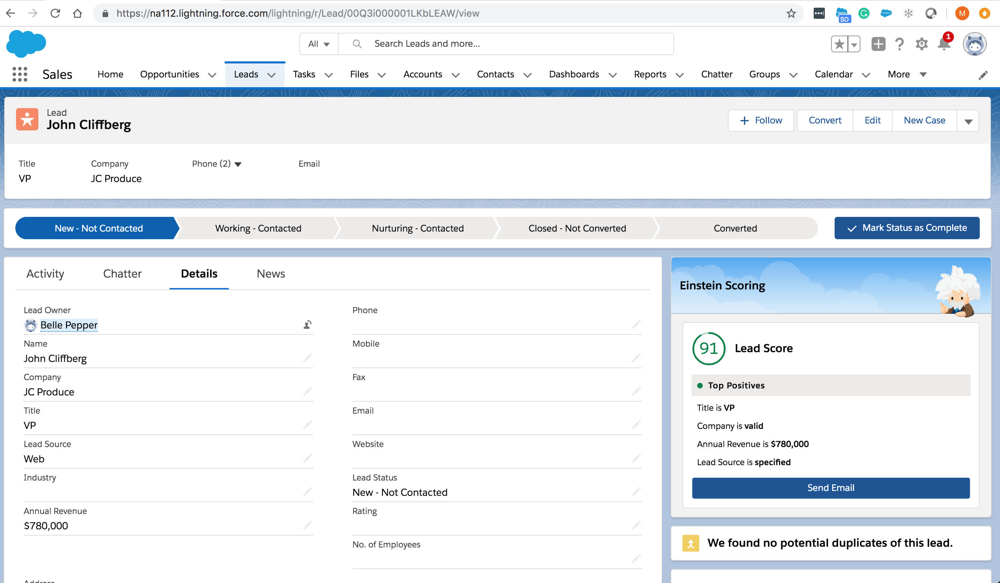
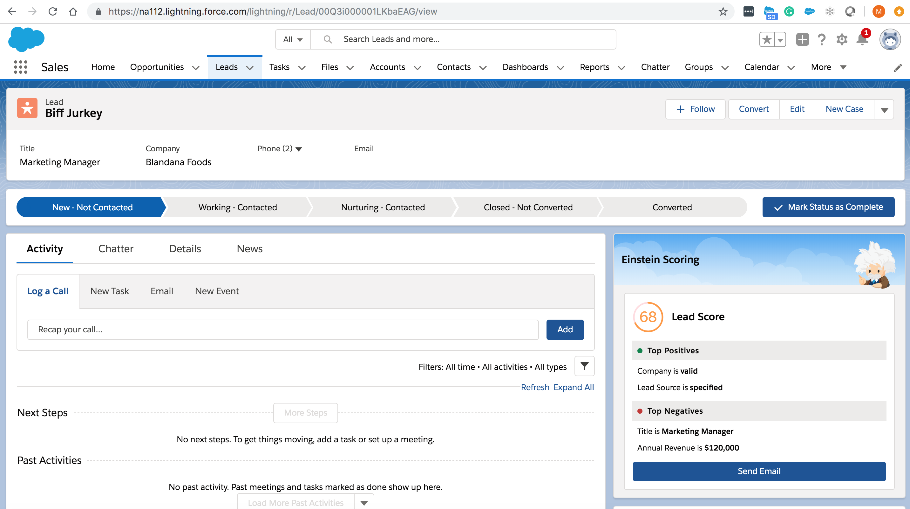
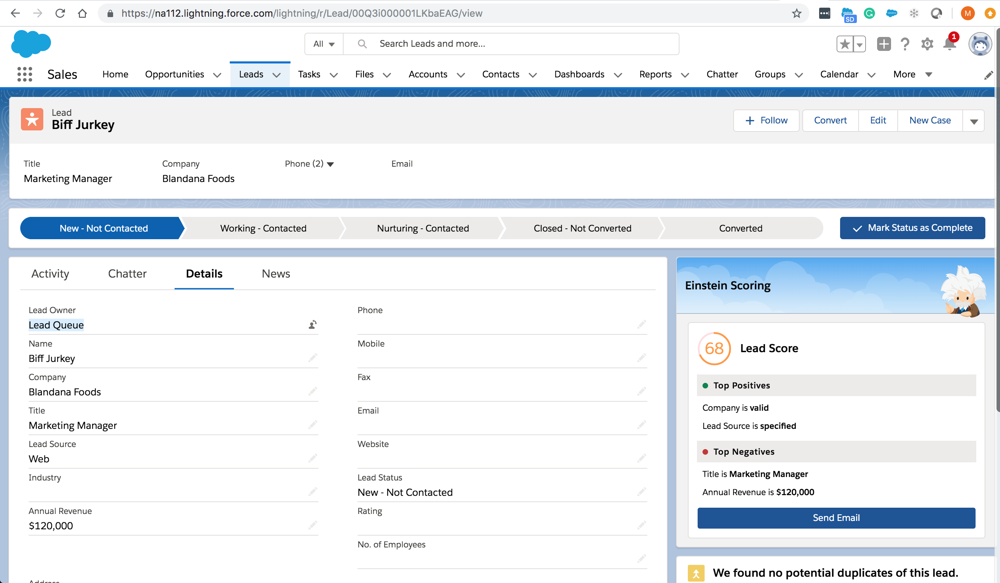

Lead scoring is a methodology for ranking leads in order to determine their sales-readiness.
We score leads based on lead's :
interest in our business
current place in the buying cycle
fit in regards to our business
Lead scoring helps companies know whether prospects need to be:
fast-tracked to sales
developed with lead nurturing
Factors making up the Lead Score:
Firmographics attributes
company size
technologies used
industry
geographic area
job title
Behavioral attributes
clicks on the website
page views
article downloads
time spend on the website
did they click on the email we sent
participated in web chat
Lead Scoring Examples
Lead Scoring goal is clarity of a sales-ready lead by assigning points/terms like
A, B, C, D
‘hot’, ‘warm’ or ‘cold’
Einstein Lead Scoring
Einstein Lead Scoring, a key capability of Sales Cloud
Einstein, helps sales reps convert more leads, faster.
Uses artificial intelligence (AI) to automatically analyze
your historical sales data and discover the top factors
that determine whether a lead is likely to convert to
an opportunity.
Sales reps can segment and prioritize leads, and gain insight
into the factors that explain why leads are likely to convert or
not.
How it works?
Einstein looks at your company’s past leads, including any custom fields,
to find patterns in your successful lead conversion history.
Einstein Lead Scoring then determines which of your current leads fit your success patterns best.
Each lead receives a score indicating how well it fits your patterns,
along with insights about which of the lead’s fields affect its score most.
Machine Learning models used:
Logistic Regression
Random Forests
Naive Bayes
Einstein Lead Scoring Setup
Key inputs need for the setting up
Which conversion milestone constitutes success for your company?
Tell Einstein whether you convert leads simply to accounts and contacts,
or also to opportunities, contact, and account.
Should Einstein consider all lead fields?
In most cases, it's best to have Einstein consider all lead fields.
There are some kinds of fields you might choose to have Einstein ignore.
Should I tell Einstein to ignore any lead fields?
Some businesses use fields that don’t affect the lead’s chance of converting.
For example, you might have a field that isn’t used until after a lead converts.
Telling Einstein to ignore those fields yields more accurate lead scores
Before ignoring a field, make sure the field doesn't affect the lead's chance of converting.
Ignoring fields that do affect lead quality decreases the accuracy of your lead scores.
How long it takes to analyze your lead conversion history?
It can take up to 24 hours to analyze your lead conversion history and your current leads.
Assign Top Leads to Reps and other Leads to Lead Queue
Top Lead Assignment Example

Low Lead Score Assignment to Lead Queue Example


Einstein Analytics Lead Scoring Dashboard
Dashboard provides insights into which lead characteristics (attributes) result in the most conversions.
Einstein Analytics Discovery
Einstein Discovery enables business users to discover relevant facts and themes using data in their
Einstein Analytics datasets.
Einstein Discovery provides answers to key business questions:
What happened? What was significant or unusual?
Why did it happen? What are the factors that possibly contributed to the observed outcome?
How do some factors compare with other factors?
What might happen in the future, based on a statistical analysis of the data?
Is there a trend, or does this data represent an isolated incident?
What are some possible actions that could improve the outcome?
## EA discovery
- Using Einstein Discovery is like having a personal data scientist doing the heavy lifting to speed up your
work.
- Every dataset tells a story. But it’s difficult to excavate that story when you’re dealing with **enormous
tables of data and many variables with complex relationships**.
- Example: shrinking margins in an auto parts supply company.
- To do a thorough analysis, you need to consider not just inventory, but also particular **markets,
distributors, incentives, and likely many other factors**.
- analyzes huge amounts of data to expose correlations that we can investigate
- shows us where to look for solutions, and predicts what might happen based on these correlations.
### Videos / Resources
- [Einstein Analytics - Discovery](https://www.youtube.com/watch?v=Ev895wkofX4)
-
[Trailhead](https://trailhead.salesforce.com/en/content/learn/modules/wave_exploration_smart_data_discovery_basics/wave_smart_data_discovery_your_data_scientist)
- [Overview](https://www.salesforce.com/products/einstein-analytics/overview/)
- [EA Dev org](https://developer.salesforce.com/promotions/orgs/analytics-de)
- [EA Discovery
Stories](https://trailhead.salesforce.com/en/content/learn/modules/understand_einstein_discovery_stories/use_stories)
### Key points
- quickly sift through huge amounts of data (EA dataset) to find:
- the important correlations
- make accurate predictions
- generates answers, explanations, and recommendations in a way that is easy for business users to understand
- finds the patterns
- What was significant or unusual?
- Why did it happen? What are the factors that possibly contributed to the observed outcome?
- How do some factors compare with other factors?
- What might happen in the future, based on a **statistical analysis** of the data?
- Is there a trend, or does this data represent an isolated one-off incident?
- Actions
- What are some possible actions that could improve the outcome?
### Example
- what’s driving profitability by figuring out ways in which we can improve margin
- Use case:
- The company’s CFO started it to find out why, all of a sudden, company margins are headed south. Then the
CEO chimes in: “We must solve this issue immediately!”
- input: transactions across different regions and verticals
- How to:
- open up Analytics Studio, grab the Einstein Analytics dataset that contains the relevant data
- tell it the variable (business metric) you want to learn about.
- Minutes later, you get a story:
- represents a comprehensive **statistical analysis** of your dataset.
- provides insights about your data that pertain to the outcome variable you're interested in (margin)
- possible underlying causes and relationships among possible influencers
- anticipates what to expect next based on a predictive analysis of your dataset
- suggests ways in which you might improve the outcome.
-

### Steps
- In EA, Create > Dataset


- What Happened to Our Margins?
- Create Story for the dataset APDist

- Based on the data in your dataset, Einstein Discovery suggests creating a story to “Maximize the variable
Margin.”

- How do I maximize margins? And that question lines up with the most pressing question you have: What
happened to lower our margins?
- Click [Data Options]. In the next screen, you tell Einstein which fields to use to create the story.

- You can de-select fields that you don't want used in the story. In this case, you want to use every field,
so leave this page as it is.

### Results


### Get the Big Picture from Stories
- AcquiredAccount.csv has 11 columns: Account Id, BillingState, Division, Industry, Ownership, Rating, Type,
AccountScore, StartDate, CloseDate, and CLV(Customer lifetime value). The CSV file contains one row of
information for each of the 10,000 different companies that our auto parts manufacturing company does business
with. Here is what the first few rows of the CSV file look like:

- Customer lifetime value (CLV) is a metric that predicts the profitability over the entire lifetime of the
company’s relationship with a customer.
- CLV helps to find the group of customers who are potentially the most profitable. That way, more marketing
resources can be allocated to them.
- Goals: maximizing margin or minimizing cost
- Result: answers, explanations, and recommendations arranged into an organized presentation with a logical
flow and related sections
- Provides insights about your data and the variables you're interested in
##### What Happened - insights
- descriptive insights that tell you more about what happened according to the data in the dataset.
- explains statistically, the most variation in the outcome variable.
- uses bar charts to help you visualize What Happened insights.
- CLV is the outcome variable in your story, and maximizing CLV is your goal.
- All the insights in this story show you how **different variables and combinations of variables** explain
variations in CLV.
- The top insights in the list reflect the most statistically significant variations in the outcome variable.
- T-Test:
- For each category in the Einstein Analytics dataset, Einstein Discovery performs a statistical calculation
called a t-test to find out whether the category is **statistically significant**.
- The t-test helps to identify categories that exhibit patterns that are statistically different from the
other categories.
- For example, for the category called Naval, the first step is to split the data into two groups: **Naval and
not Naval**. The second step is to use the t-test to determine whether these two groups are statistically
different.
- What is t-test?
- invented by William Sealy Gosset
- [paper](img/probable-error-of-a-mean.pdf)
- checks if 2 means (averages) are reliably different from each other
- it is an inferential statistics (instead descriptive statistics)
- Not only describe our sample but also tell us about new samples that we do not have even
- So allow us to take inferences (generalize the findings ) about whole population beyond our data we have
- t = (variance between groups) / (variance within the group)
- big t value : different groups
- small t value : similar groups

- refer [StatsCast: What is a t-test?](https://www.youtube.com/watch?v=0Pd3dc1GcHc)
- refer[Student's t-test](https://www.youtube.com/watch?v=pTmLQvMM-1M)
- refer[T-test using Python and
Numpy](https://towardsdatascience.com/inferential-statistics-series-t-test-using-numpy-2718f8f9bf2f)
- Division is the variable that explains the most variation in CLV.
- This type of insight, called a **first-order analysis**, examines how one variable (Division) explains
variation in the outcome variable (CLV).
- The key takeaway from this insight is that Division explains 14.2% of the variation in CLV. Einstein
Discovery did a statistical calculation to find the coefficient of determination, R2 (R squared). R2 tells you
how much Division explains variation of the outcome variable (CLV)—in other words, how much predictive power
the Division variable has. More observations describe other factors that affect CLV.

- CLV is the vertical axis and Division is the horizontal axis.
The orange horizontal line in the chart shows the average CLV, which is just above 20 K.
- Blue bars show variables that extend further above and below the average CLV—the most interesting
correlations. Of these divisions, Raw Materials and Mapping are the most significantly above average, and
Standard Hardware is the most significantly below average.
- Gray bars show variables that are close to the average CLV. These divisions are statistically less
significant and, therefore, are not listed in the explanatory text on the left. When considering gray bars,
you can't assume that the differences from the other categories is meaningful.


- In the blue curve, notice that more of the values are closer to the average. It has a smaller standard
deviation. In the yellow curve, the values are more spread out, and therefore it has a larger standard
deviation.

#### View a Second-Order Analysis
- This is a refinement of the first insight discussed previously, CLV by Division. It adds a second variable,
When Type is Consulting, meaning that the combination of the two variables (CLV is Division and Type is
Consulting) gives a strong signal.

- Notice that what stands out first in the chart is the blue bar above Naval, which shows that Consulting is
highest when Division is Naval.

- There are two bars for each division. The bar on the left represents the division's average value when only
the retail industry is included. The bar on the right represents the average value for the division when all
industries except retail are included. Comparing these bars lets you see how differently this pairing behaves.
- The reason that Einstein Discovery flags this insight is that this particular industry, Retail, behaves
differently from the rest of the population, with regard to Division. In this case, each bar refers to a
Division when Industry is Retail. When we compare each division against the rest of the population, we compare
that division in the retail industry versus that division in all other industries. If those two groups are
statistically different, the bar is highlighted in blue.

- 2,450: that is the difference between Standard Hardware when Industry is Retail and Standard Hardware in all
other industries.
#### CLV by type

### What Is The Difference insights
- are comparative insights that help you better understand the relationships between explanatory variables and
the goal (target outcome variable) in your story.
- help you figure out which factors contribute to the biggest changes in the outcome variable.


- It is useful to compare the CLV of a single variable with the global CLV average.


- Compare Two Variables


- Add a Filter
Optionally, you can add a filter to further focus your analysis on a subset of the data. On the far right side
of the Insights navigation bar, click Search story insights and choose Type - Consulting.


 Setup Demo
Setup Demo